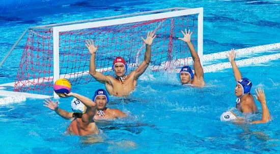

Social

Loisir pratiqué : Water-polo / Programmation.
3 trucs pour me changer les pensées : Faire du water-polo, programmer et parler avec mes amis.
2 amis qui vont au CDSL et que je connais sont Léo Mathis Revenko et Étienne Charest.
Fait intéressant : Quand on recherche mon nom sur google on me trouve sur water-polo canada.